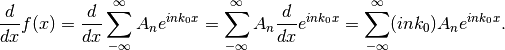
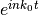

Intelligence
0.0.8
Intelligence
0.0.8
A function  defined on
defined on ![x\in [-L, L]](../_images/math/ea954935d7116ec7c6256823974a209c97cb28ea.png) can be decomposed into Fourier series
can be decomposed into Fourier series
where
A continuous Fourier transform is not very different from Fourier series for equation solving. A function can be written as a convolution of another function ,
(1)¶
where is the Fourier transform of . It is called a transform because we have a change of variable from t to x. This form is not convinient for the purpose of equation solving. We usually write it as
which is derived by plug in to Eq. ((1)).
Some Tips about Differential Equations
It’s useful to try out Fourier series and Fourier transform on some frequently used operators.
For Fourier series

As we apply Fourier transform,
which is more or less similar to the result from Fourier series.
We provide two examples. The first one is a homogenous equation that is NOT solved using this method. The second equation is a inhomogenous one.
In the first example, we apply Fourier series and Fourier transform to the differential equation of harmonic oscillators,
(2)¶
where .
The second example will be a damped oscillator, which is
(3)¶
We’ll find out that homogenous differential equations doesn’t have solutions of the Fourier series type. The reason is that the transform of the solution to a homogeneous equation diverges. However, we still love this example because it shows us that using this method doesn’t garantee that we will find a solution.
Insert Fourier series of into equation of harmonic oscillator ((2)),
The derivatives will only apply to term , so that the equations becomes,

We move everything to the left side and combine the summations,
The only possible solution to this equation is that the coefficient is zero, i.e.,
which has a solution of interest
This result is the dispersion relation like solution to the system. However, we can not construct the original solution from this relation only. The reason is that the equation is homogeneous.
We assume that the function that we are looking for is a Fourier transform of another function
Insert this transform into the equation of harmonic oscillator ((2)),
which is simplified to
We find ourselves in the same situation as the Fourier series solution. No solution is found.
For an inhomogeneous equation ((3)), we can apply the same trick. However, we use Fourier transform for generality. Please note that the Fourier transform requires the solution to be defined on a range of the argument.
Before we actually work out the case, here are some tricks. We always use hat to denote the inverse Fourier transformed equation. Fourier transform of the equation actually will be a replacement of the following,
Using these rules, we find out the Fourier transform equation of ((3)),
which has a solution
so that the final solution we are looking for becomes
We know so can be calculated.
© 2018, Lei Ma| GitHub| Statistical Mechanics Notebook | Index | Page Source| changelog| Created with Sphinx